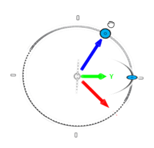

<div id="view_tilt_from_recipe"><p>Incline l'axe Z dans la direction définie par le manipulateur <b>Tournage</b>.</p>
<table class="tipTable" cellspacing="10">
<tr>
<td><center></center></td>
</tr><tr>
<td><center><p><b>Manipulateur Inclinaison</b></p></center></td>
</tr></table>
</div>